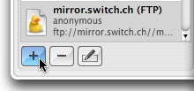
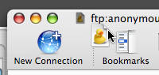
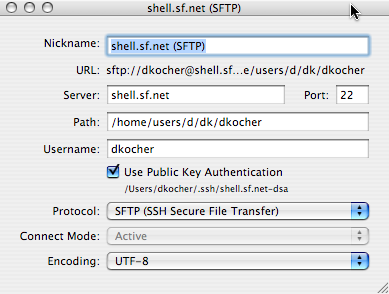
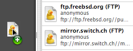
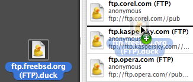

-
Afegir adreces d'interès
Seleccioneu Visualitza → Mostra el calaix d'adreces d'interès. Cliqueu en el botó amb el signe més per a afegir el servidor al que esteu connectats a les adreces d'interès. A continuació s'us obrirà una finestra on podreu ajustar les propietats de les adreces d'interès (per exemple, un nom curt)
També podeu arrossegar la icona del títol de finestra al calaix de les adreces d'interès o fora de la aplicació, en el Finder o l'escriptori.
 -
Editar les adreces d'interès.
Seleccioneu Adreça d'interès → Edita l'adreça d'interès. A continuació apareixerà una finestra on podeu editar-ne els detalls.
 -
Exportar adreces d'interès.
Arrossegueu l'adreça d'interès des de el calaix a qualsevol lloc del Finder (per exemple l'escriptori). Podreu fer doble clic en la icona resultant per a connectar-vos a la adreça les properes vegades.
 -
Importar adreces d'interès.
Arrossegueu l'adreça d'interès des de el Finder al calaix d'adreces d'interès.
